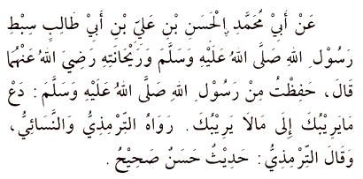

It is narrated on the authority of Amirul Mu’minin, Abu Hafs ‘Umar bin al-Khattab, radiyallahu ‘anhu, who said: I heard the Messenger of Allah, sallallahu ‘alayhi wasallam, say:
“Actions are (judged) by motives (niyyah), so each man will have what he intended. Thus, he whose migration (hijrah) was to Allah and His Messenger, his migration is to Allah and His Messenger; but he whose migration was for some worldly thing he might gain, or for a wife might marry, his migration is to that for which he migrated.”
“Actions are (judged) by motives (niyyah), so each man will have what he intended. Thus, he whose migration (hijrah) was to Allah and His Messenger, his migration is to Allah and His Messenger; but he whose migration was for some worldly thing he might gain, or for a wife might marry, his migration is to that for which he migrated.”
[Sahih Bukhari 54 & Muslim]
Also on the authority of 'Umar, radiyallahu 'anhu, who said:
"While we were one day sitting with the Messenger of Allah, sallallahu 'alayhi wasallam, there appeared before us a man dressed in extremely white clothes and with very black hair. No traces of journeying were visible on him, and none of us knew him. He sat down close by the Prophet, sallallahu 'alayhi wasallam, rested his knee against his thighs, and said, O Muhammad! Inform me about Islam." Said the Messenger of Allah, sallallahu 'alayhi wasallam, "Islam is that you should testify that there is no deity save Allah and that Muhammad is His Messenger, that you should perform salah (ritual prayer), pay the zakah, fast during Ramadan, and perform Hajj (pilgrimage) to the House (the Ka'bah at Makkah), if you can find a way to it (or find the means for making the journey to it)." Said he (the man), "You have spoken truly."
We were astonished at his thus questioning him and telling him that he was right, but he went on to say, "Inform me about iman (faith)." He (the Messenger of Allah) answered, "It is that you believe in Allah and His angels and His Books and His Messengers and in the Last Day, and in fate (qadar), both in its good and in its evil aspects." He said, "You have spoken truly."
Then he (the man) said, "Inform me about Ihsan." He (the Messenger of Allah) answered, " It is that you should serve Allah as though you could see Him, for though you cannot see Him yet He sees you." He said, "Inform me about the Hour." He (the Messenger of Allah) said, "About that the one questioned knows no more than the questioner." So he said, "Well, inform me about the signs thereof (i.e. of its coming)." Said he, "They are that the slave-girl will give birth to her mistress, that you will see the barefooted ones, the naked, the destitute, the herdsmen of the sheep (competing with each other) in raising lofty buildings." Thereupon the man went off.
I waited a while, and then he (the Messenger of Allah) said, "O 'Umar, do you know who that questioner was?" I replied, "Allah and His Messenger know better." He said, "That was Jibril. He came to teach you your religion.""
"While we were one day sitting with the Messenger of Allah, sallallahu 'alayhi wasallam, there appeared before us a man dressed in extremely white clothes and with very black hair. No traces of journeying were visible on him, and none of us knew him. He sat down close by the Prophet, sallallahu 'alayhi wasallam, rested his knee against his thighs, and said, O Muhammad! Inform me about Islam." Said the Messenger of Allah, sallallahu 'alayhi wasallam, "Islam is that you should testify that there is no deity save Allah and that Muhammad is His Messenger, that you should perform salah (ritual prayer), pay the zakah, fast during Ramadan, and perform Hajj (pilgrimage) to the House (the Ka'bah at Makkah), if you can find a way to it (or find the means for making the journey to it)." Said he (the man), "You have spoken truly."
We were astonished at his thus questioning him and telling him that he was right, but he went on to say, "Inform me about iman (faith)." He (the Messenger of Allah) answered, "It is that you believe in Allah and His angels and His Books and His Messengers and in the Last Day, and in fate (qadar), both in its good and in its evil aspects." He said, "You have spoken truly."
Then he (the man) said, "Inform me about Ihsan." He (the Messenger of Allah) answered, " It is that you should serve Allah as though you could see Him, for though you cannot see Him yet He sees you." He said, "Inform me about the Hour." He (the Messenger of Allah) said, "About that the one questioned knows no more than the questioner." So he said, "Well, inform me about the signs thereof (i.e. of its coming)." Said he, "They are that the slave-girl will give birth to her mistress, that you will see the barefooted ones, the naked, the destitute, the herdsmen of the sheep (competing with each other) in raising lofty buildings." Thereupon the man went off.
I waited a while, and then he (the Messenger of Allah) said, "O 'Umar, do you know who that questioner was?" I replied, "Allah and His Messenger know better." He said, "That was Jibril. He came to teach you your religion.""
Sahih Muslim 4,
On the authority of Abdullah, the son of Umar ibn al-Khattab (ra), who said:
I heard the Messenger of Allah (ﷺ) say, "Islam has been built on five [pillars]: testifying that there is no deity worthy of worship except Allah and that Muhammad is the Messenger of Allah, establishing the salah (prayer), paying the zakat (obligatory charity), making the hajj (pilgrimage) to the House, and fasting in Ramadhan."
I heard the Messenger of Allah (ﷺ) say, "Islam has been built on five [pillars]: testifying that there is no deity worthy of worship except Allah and that Muhammad is the Messenger of Allah, establishing the salah (prayer), paying the zakat (obligatory charity), making the hajj (pilgrimage) to the House, and fasting in Ramadhan."
[Bukhari & Muslim]
Abu 'Abd al-Rahman 'Abdullah bin Mas'ud, radiyallahu 'anhu, reported: The Messenger of Allah, sallallahu 'alayhi wasallam, the most truthful, the most trusted, told us:
"Verily the creation of any one of you takes place when he is assembled in his mother's womb; for forty days he is as a drop of fluid, then it becomes a clot for a similar period. Thereafter, it is a lump looking like it has been chewed for a similar period. Then an angel is sent to him, who breathes the ruh (spirit) into him. This Angel is commanded to write Four decrees: that he writes down his provision (rizq), his life span, his deeds, and whether he will be among the wretched or the blessed.
I swear by Allah - there is no God but He - one of you may perform the deeds of the people of Paradise till there is naught but an arm's length between him and it, when that which has been written will outstrip him so that he performs the deeds of the people of the Hell Fire; one of you may perform the deeds of the people of the Hell Fire, till there is naught but an arm's length between him and it, when that which has been written will overtake him so that he performs the deeds of the people of Paradise and enters therein."
"Verily the creation of any one of you takes place when he is assembled in his mother's womb; for forty days he is as a drop of fluid, then it becomes a clot for a similar period. Thereafter, it is a lump looking like it has been chewed for a similar period. Then an angel is sent to him, who breathes the ruh (spirit) into him. This Angel is commanded to write Four decrees: that he writes down his provision (rizq), his life span, his deeds, and whether he will be among the wretched or the blessed.
I swear by Allah - there is no God but He - one of you may perform the deeds of the people of Paradise till there is naught but an arm's length between him and it, when that which has been written will outstrip him so that he performs the deeds of the people of the Hell Fire; one of you may perform the deeds of the people of the Hell Fire, till there is naught but an arm's length between him and it, when that which has been written will overtake him so that he performs the deeds of the people of Paradise and enters therein."
[Al-Bukhari & Muslim]
On the authority of the mother of the faithful, Aisha (ra), who said:
The Messenger of Allah (ﷺ) said, “He who innovates something in this matter of ours (i.e., Islam) that is not of it will have it rejected (by Allah).”
[Bukhari & Muslim]
In another version in Muslim it reads:
“He who does an act which we have not commanded, will have it rejected (by Allah).”
The Messenger of Allah (ﷺ) said, “He who innovates something in this matter of ours (i.e., Islam) that is not of it will have it rejected (by Allah).”
[Bukhari & Muslim]
In another version in Muslim it reads:
“He who does an act which we have not commanded, will have it rejected (by Allah).”
[Bukhari & Muslim]
On the authority of an-Nu’man ibn Basheer (ra), who said:
I heard the Messenger of Allah (ﷺ) say,
“That which is lawful is clear and that which is unlawful is clear, and between the two of them are doubtful matters about which many people do not know. Thus he who avoids doubtful matters clears himself in regard to his religion and his honor, but he who falls into doubtful matters [eventually] falls into that which is unlawful, like the shepherd who pastures around a sanctuary, all but grazing therein. Truly every king has a sanctuary, and truly Allah’s sanctuary is His prohibitions. Truly in the body there is a morsel of flesh, which, if it be whole, all the body is whole, and which, if it is diseased, all of [the body] is diseased. Truly, it is the heart.”
“That which is lawful is clear and that which is unlawful is clear, and between the two of them are doubtful matters about which many people do not know. Thus he who avoids doubtful matters clears himself in regard to his religion and his honor, but he who falls into doubtful matters [eventually] falls into that which is unlawful, like the shepherd who pastures around a sanctuary, all but grazing therein. Truly every king has a sanctuary, and truly Allah’s sanctuary is His prohibitions. Truly in the body there is a morsel of flesh, which, if it be whole, all the body is whole, and which, if it is diseased, all of [the body] is diseased. Truly, it is the heart.”
[Bukhari & Muslim]
On the authority of Tameem ibn Aus ad-Daree (ra):
The Prophet (ﷺ) said,
“The deen (religion) is naseehah (advice, sincerity).” We said, “To whom?” He (ﷺ) said, “To Allah, His Book, His Messenger, and to the leaders of the Muslims and their common folk.”
“The deen (religion) is naseehah (advice, sincerity).” We said, “To whom?” He (ﷺ) said, “To Allah, His Book, His Messenger, and to the leaders of the Muslims and their common folk.”
[Muslim]
On the authority of Abdullah ibn Umar (ra):
The Messenger of Allah (ﷺ) said,
"I have been ordered to fight against the people until they testify that there is none worthy of worship except Allah and that Muhammad is the Messenger of Allah, and until they establish the salah and pay the zakat. And if they do that then they will have gained protection from me for their lives and property, unless [they commit acts that are punishable] in Islam, and their reckoning will be with Allah."
"I have been ordered to fight against the people until they testify that there is none worthy of worship except Allah and that Muhammad is the Messenger of Allah, and until they establish the salah and pay the zakat. And if they do that then they will have gained protection from me for their lives and property, unless [they commit acts that are punishable] in Islam, and their reckoning will be with Allah."
[Bukhari & Muslim]
On the authority of Abu Hurayrah (ra):
I heard the Messenger of Allah (ﷺ) say,
“What I have forbidden for you, avoid. What I have ordered you [to do], do as much of it as you can. For verily, it was only the excessive questioning and their disagreeing with their Prophets that destroyed [the nations] who were before you.”
“What I have forbidden for you, avoid. What I have ordered you [to do], do as much of it as you can. For verily, it was only the excessive questioning and their disagreeing with their Prophets that destroyed [the nations] who were before you.”
[Bukhari & Muslim]
On the authority of Abu Hurayrah (ra):
The Messenger of Allah (ﷺ) said,M
“Allah the Almighty is Good and accepts only that which is good. And verily Allah has commanded the believers to do that which He has commanded the Messengers. So the Almighty has said: “O (you) Messengers! Eat of the tayyibat [all kinds of halal (legal) foods], and perform righteous deeds.” [23:51] and the Almighty has said: “O you who believe! Eat of the lawful things that We have provided you.” [2:172]” Then he (ﷺ) mentioned [the case] of a man who, having journeyed far, is disheveled and dusty, and who spreads out his hands to the sky saying “O Lord! O Lord!,” while his food is haram (unlawful), his drink is haram, his clothing is haram, and he has been nourished with haram, so how can [his supplication] be answered?
“Allah the Almighty is Good and accepts only that which is good. And verily Allah has commanded the believers to do that which He has commanded the Messengers. So the Almighty has said: “O (you) Messengers! Eat of the tayyibat [all kinds of halal (legal) foods], and perform righteous deeds.” [23:51] and the Almighty has said: “O you who believe! Eat of the lawful things that We have provided you.” [2:172]” Then he (ﷺ) mentioned [the case] of a man who, having journeyed far, is disheveled and dusty, and who spreads out his hands to the sky saying “O Lord! O Lord!,” while his food is haram (unlawful), his drink is haram, his clothing is haram, and he has been nourished with haram, so how can [his supplication] be answered?
[Muslim]

On the authority of Abu Muhammad al-Hasan ibn Ali ibn Abee Talib (may Allah be pleased with him), the grandson of the Messenger of Allah (peace and blessings of Allah be upon him), and the one much loved by him, who said:
I memorised from the Messenger of Allah (peace and blessings of Allah be upon him): “Leave that which makes you doubt for that which does not make you doubt.”
I memorised from the Messenger of Allah (peace and blessings of Allah be upon him): “Leave that which makes you doubt for that which does not make you doubt.”
[At-Tirmidhi] [An-Nasai] At-Tirmidhi said that it was a good and sound (hasan saheeh) hadeeth.
On the authority of Abu Hurayrah (may Allah be pleased with him) who said:
The Messenger of Allah (peace and blessings of Allah be upon him) said,
“Part of the perfection of one’s Islam is his leaving that which does not concern him.”
“Part of the perfection of one’s Islam is his leaving that which does not concern him.”
A hasan (good) hadeeth which was related by at-Tirmidhi and others in this fashion.
On the authority of Abu Hamzah Anas bin Malik (may Allah be pleased with him) — the servant of the Messenger of Allah (peace and blessings of Allah be upon him) — that the Prophet (peace and blessings of Allah be upon him) said:
None of you [truly] believes until he loves for his brother that which he loves for himself.
None of you [truly] believes until he loves for his brother that which he loves for himself.
[Al-Bukhari] [Muslim]
On the authority of Ibn Masood (may Allah be pleased with him) who said:
The Messenger of Allah (peace and blessings of Allah be upon him) said,
It is not permissible to spill the blood of a Muslim except in three [instances]: the married person who commits adultery, a life for a life, and the one who forsakes his religion and separates from the community.
It is not permissible to spill the blood of a Muslim except in three [instances]: the married person who commits adultery, a life for a life, and the one who forsakes his religion and separates from the community.
[Al-Bukhari] [Muslim]
On the authority of Abu Hurayrah (may Allah be pleased with him), that the Messenger of Allah (peace and blessings of Allah be upon him) said:
Let him who believes in Allah and the Last Day speak good, or keep silent; and let him who believes in Allah and the Last Day be generous to his neighbour; and let him who believes in Allah and the Last Day be generous to his guest.
Let him who believes in Allah and the Last Day speak good, or keep silent; and let him who believes in Allah and the Last Day be generous to his neighbour; and let him who believes in Allah and the Last Day be generous to his guest.
[Al-Bukhari] [Muslim]
On the authority of Abu Hurayrah (may Allah be pleased with him):
A man said to the Prophet (peace and blessings of Allah be upon him), “Counsel me,” so he (peace and blessings of Allah be upon him) said, “Do not become angry.” The man repeated [his request for counsel] several times, and [each time] he (peace and blessings of Allah be upon him) said, “Do not become angry.”
A man said to the Prophet (peace and blessings of Allah be upon him), “Counsel me,” so he (peace and blessings of Allah be upon him) said, “Do not become angry.” The man repeated [his request for counsel] several times, and [each time] he (peace and blessings of Allah be upon him) said, “Do not become angry.”
[Al-Bukhari]
On the authority of Abu Ya’la Shaddad bin Aws (may Allah be pleased with him), that the Messenger of Allah (peace and blessings of Allah be upon him) said:
Verily Allah has prescribed ihsan (proficiency, perfection) in all things. So if you kill then kill well; and if you slaughter, then slaughter well. Let each one of you sharpen his blade and let him spare suffering to the animal he slaughters.” [
Verily Allah has prescribed ihsan (proficiency, perfection) in all things. So if you kill then kill well; and if you slaughter, then slaughter well. Let each one of you sharpen his blade and let him spare suffering to the animal he slaughters.” [
[Muslim]
On the authority of Abu Dharr Jundub ibn Junadah, and Abu Abdur-Rahman Muadh bin Jabal (may Allah be pleased with him), that the Messenger of Allah (peace and blessings of Allah be upon him) said:
Have taqwa (fear) of Allah wherever you may be, and follow up a bad deed with a good deed which will wipe it out, and behave well towards the people.
Have taqwa (fear) of Allah wherever you may be, and follow up a bad deed with a good deed which will wipe it out, and behave well towards the people.
It was related by at-Tirmidhi, who said it was a hasan (good) hadeeth, and in some copies it is stated to be a hasan saheeh hadeeth.
On the authority of Abu Abbas Abdullah bin Abbas (may Allah be pleased with him) who said:
One day I was behind the Prophet (peace and blessings of Allah be upon him) [riding on the same mount] and he said, “O young man, I shall teach you some words [of advice]: Be mindful of Allah and Allah will protect you. Be mindful of Allah and you will find Him in front of you. If you ask, then ask Allah [alone]; and if you seek help, then seek help from Allah [alone]. And know that if the nation were to gather together to benefit you with anything, they would not benefit you except with what Allah had already prescribed for you. And if they were to gather together to harm you with anything, they would not harm you except with what Allah had already prescribed against you. The pens have been lifted and the pages have dried.”
Another narration, other than that of Tirmidhi, reads:
Be mindful of Allah, and you will find Him in front of you. Recognize and acknowledge Allah in times of ease and prosperity, and He will remember you in times of adversity. And know that what has passed you by [and you have failed to attain] was not going to befall you, and what has befallen you was not going to pass you by. And know that victory comes with patience, relief with affliction, and hardship with ease.
One day I was behind the Prophet (peace and blessings of Allah be upon him) [riding on the same mount] and he said, “O young man, I shall teach you some words [of advice]: Be mindful of Allah and Allah will protect you. Be mindful of Allah and you will find Him in front of you. If you ask, then ask Allah [alone]; and if you seek help, then seek help from Allah [alone]. And know that if the nation were to gather together to benefit you with anything, they would not benefit you except with what Allah had already prescribed for you. And if they were to gather together to harm you with anything, they would not harm you except with what Allah had already prescribed against you. The pens have been lifted and the pages have dried.”
It was related by at-Tirmidhi, who said it was a good and sound hadeeth.
Another narration, other than that of Tirmidhi, reads:
Be mindful of Allah, and you will find Him in front of you. Recognize and acknowledge Allah in times of ease and prosperity, and He will remember you in times of adversity. And know that what has passed you by [and you have failed to attain] was not going to befall you, and what has befallen you was not going to pass you by. And know that victory comes with patience, relief with affliction, and hardship with ease.
On the authority of Abu Masood Uqbah bin ’Amr al-Ansaree al-Badree (may Allah be pleased with him) who said:
The Messenger of Allah (peace and blessings of Allah be upon him) said, “Verily, from what was learnt by the people from the speech of the earliest prophecy is: If you feel no shame, then do as you wish.”
The Messenger of Allah (peace and blessings of Allah be upon him) said, “Verily, from what was learnt by the people from the speech of the earliest prophecy is: If you feel no shame, then do as you wish.”
[Al-Bukhari]
On the authority of Abu `Amr — and he is also called Abu `Amrah — Sufyan bin Abdullah ath- Thaqafee (may Allah be pleased with him) who said:
I said,
"O Messenger of Allah, tell me something about al-Islam which I can ask of no one but you."
He (peace and blessings of Allah be upon him) said, "Say I believe in Allah — and then be steadfast."
I said,
"O Messenger of Allah, tell me something about al-Islam which I can ask of no one but you."
He (peace and blessings of Allah be upon him) said, "Say I believe in Allah — and then be steadfast."
[Muslim]
On the authority of Abu Abdullah Jabir bin Abdullah al-Ansaree (may Allah be pleased with him) that:
A man questioned the Messenger of Allah (peace and blessings of Allah be upon him) and said,
“Do you think that if I perform the obligatory prayers, fast in Ramadhan, treat as lawful that which is halal, and treat as forbidden that which is haram, and do not increase upon that [in voluntary good deeds], then I shall enter Paradise?” He (peace and blessings of Allah be upon him) replied, “Yes.”
A man questioned the Messenger of Allah (peace and blessings of Allah be upon him) and said,
“Do you think that if I perform the obligatory prayers, fast in Ramadhan, treat as lawful that which is halal, and treat as forbidden that which is haram, and do not increase upon that [in voluntary good deeds], then I shall enter Paradise?” He (peace and blessings of Allah be upon him) replied, “Yes.”
[Muslim]
On the authority of Abu Malik al-Harith bin Asim al-Asharee (may Allah be pleased with him) who said:
The Messenger of Allah (peace and blessings of Allah be upon him) said,
“Purity is half of iman (faith). ‘Al-hamdu lillah (praise be to Allah)’ fills the scales, and ‘subhan-Allah (how far is Allah from every imperfection) and ‘Al-hamdulillah (praise be to Allah)’ fill that which is between heaven and earth. And the salah (prayer) is a light, and charity is a proof, and patience is illumination, and the Qur’an is a proof either for you or against you. Every person starts his day as a vendor of his soul, either freeing it or causing its ruin.”
The Messenger of Allah (peace and blessings of Allah be upon him) said,
“Purity is half of iman (faith). ‘Al-hamdu lillah (praise be to Allah)’ fills the scales, and ‘subhan-Allah (how far is Allah from every imperfection) and ‘Al-hamdulillah (praise be to Allah)’ fill that which is between heaven and earth. And the salah (prayer) is a light, and charity is a proof, and patience is illumination, and the Qur’an is a proof either for you or against you. Every person starts his day as a vendor of his soul, either freeing it or causing its ruin.”
[Muslim]
On the authority of Abu Dharr al-Ghifaree (may Allah be pleased with him) from the Prophet (peace and blessings of Allah be upon him) from his Lord, that He said:
O My servants! I have forbidden dhulm (oppression) for Myself, and I have made it forbidden amongst you, so do not oppress one another.
O My servants, all of you are astray except those whom I have guided, so seek guidance from Me and I shall guide you.
O My servants, all of you are hungry except those whom I have fed, so seek food from Me and I shall feed you.
O My servants, all of you are naked except those whom I have clothed, so seek clothing from Me and I shall clothe you.
O My servants, you commit sins by day and by night, and I forgive all sins, so seek forgiveness from Me and I shall forgive you.
O My servants, you will not attain harming Me so as to harm Me, and you will not attain benefiting Me so as to benefit Me.
O My servants, if the first of you and the last of you, and the humans of you and the jinn of you, were all as pious as the most pious heart of any individual amongst you, then this would not increase My Kingdom an iota.
O My servants, if the first of you and the last of you, and the humans of you and the jinn of you, were all as wicked as the most wicked heart of any individual amongst you, then this would not decrease My Kingdom an iota.
O My servants, if the first of you and the last of you, and the humans of you and the jinn of you, were all to stand together in one place and ask of Me, and I were to give everyone what he requested, then that would not decrease what I Possess, except what is decreased of the ocean when a needle is dipped into it.
O My servants, it is but your deeds that I account for you, and then recompense you for. So he who finds good, let him praise Allah, and he who finds other than that, let him blame no one but himself.
O My servants! I have forbidden dhulm (oppression) for Myself, and I have made it forbidden amongst you, so do not oppress one another.
O My servants, all of you are astray except those whom I have guided, so seek guidance from Me and I shall guide you.
O My servants, all of you are hungry except those whom I have fed, so seek food from Me and I shall feed you.
O My servants, all of you are naked except those whom I have clothed, so seek clothing from Me and I shall clothe you.
O My servants, you commit sins by day and by night, and I forgive all sins, so seek forgiveness from Me and I shall forgive you.
O My servants, you will not attain harming Me so as to harm Me, and you will not attain benefiting Me so as to benefit Me.
O My servants, if the first of you and the last of you, and the humans of you and the jinn of you, were all as pious as the most pious heart of any individual amongst you, then this would not increase My Kingdom an iota.
O My servants, if the first of you and the last of you, and the humans of you and the jinn of you, were all as wicked as the most wicked heart of any individual amongst you, then this would not decrease My Kingdom an iota.
O My servants, if the first of you and the last of you, and the humans of you and the jinn of you, were all to stand together in one place and ask of Me, and I were to give everyone what he requested, then that would not decrease what I Possess, except what is decreased of the ocean when a needle is dipped into it.
O My servants, it is but your deeds that I account for you, and then recompense you for. So he who finds good, let him praise Allah, and he who finds other than that, let him blame no one but himself.
[Muslim]
Also on the authority of Abu Dharr (may Allah be pleased with him):
Some people from amongst the Companions of the Messenger of Allah (peace and blessings of Allah be upon him) said to the Prophet (peace and blessings of Allah be upon him),
"O Messenger of Allah, the affluent have made off with the rewards; they pray as we pray, they fast as we fast, and they give [much] in charity by virtue of their wealth."
He (peace and blessings of Allah be upon him) said,
"Has not Allah made things for you to give in charity? Truly every tasbeehah [saying: 'subhan-Allah'] is a charity, and every takbeerah [saying: 'Allahu akbar'] is a charity, and every tahmeedah [saying: 'al-hamdu lillah'] is a charity, and every tahleelah [saying: 'laa ilaha illAllah'] is a charity. And commanding the good is a charity, and forbidding an evil is a charity, and in the bud`i [sexual act] of each one of you there is a charity."
They said, "O Messenger of Allah, when one of us fulfils his carnal desire will he have some reward for that?"
He (peace and blessings of Allah be upon him) said, "Do you not see that if he were to act upon it [his desire] in an unlawful manner then he would be deserving of punishment? Likewise, if he were to act upon it in a lawful manner then he will be deserving of a reward."
Some people from amongst the Companions of the Messenger of Allah (peace and blessings of Allah be upon him) said to the Prophet (peace and blessings of Allah be upon him),
"O Messenger of Allah, the affluent have made off with the rewards; they pray as we pray, they fast as we fast, and they give [much] in charity by virtue of their wealth."
He (peace and blessings of Allah be upon him) said,
"Has not Allah made things for you to give in charity? Truly every tasbeehah [saying: 'subhan-Allah'] is a charity, and every takbeerah [saying: 'Allahu akbar'] is a charity, and every tahmeedah [saying: 'al-hamdu lillah'] is a charity, and every tahleelah [saying: 'laa ilaha illAllah'] is a charity. And commanding the good is a charity, and forbidding an evil is a charity, and in the bud`i [sexual act] of each one of you there is a charity."
They said, "O Messenger of Allah, when one of us fulfils his carnal desire will he have some reward for that?"
He (peace and blessings of Allah be upon him) said, "Do you not see that if he were to act upon it [his desire] in an unlawful manner then he would be deserving of punishment? Likewise, if he were to act upon it in a lawful manner then he will be deserving of a reward."
[Muslim]
On the authority of Abu Hurayrah (may Allah be pleased with him) who said:
The Messenger of Allah (peace and blessings of Allah be upon him) said,
“Every joint of a person must perform a charity each day that the sun rises: to judge justly between two people is a charity. To help a man with his mount, lifting him onto it or hoisting up his belongings onto it, is a charity. And the good word is a charity. And every step that you take towards the prayer is a charity, and removing a harmful object from the road is a charity.”
“Every joint of a person must perform a charity each day that the sun rises: to judge justly between two people is a charity. To help a man with his mount, lifting him onto it or hoisting up his belongings onto it, is a charity. And the good word is a charity. And every step that you take towards the prayer is a charity, and removing a harmful object from the road is a charity.”
[Al-Bukhari] [Muslim]
On the authority of an-Nawas bin Sam’an (may Allah be pleased with him), that the Prophet (peace and blessings of Allah be upon him) said:
Righteousness is in good character, and wrongdoing is that which wavers in your soul, and which you dislike people finding out about. [Muslim] And on the authority of Wabisah bin Ma’bad (may Allah be pleased with him) who said: I came to the Messenger of Allah (peace and blessings of Allah be upon him) and he (peace and blessings of Allah be upon him) said, “You have come to ask about righteousness.” I said, “Yes.” He (peace and blessings of Allah be upon him) said, “Consult your heart. Righteousness is that about which the soul feels at ease and the heart feels tranquil. And wrongdoing is that which wavers in the soul and causes uneasiness in the breast, even though people have repeatedly given their legal opinion [in its favour].”
A good hadeeth transmitted from the musnads of the two imams, Ahmed bin Hambal and Al- Darimi, with a good chain of authorities.
Righteousness is in good character, and wrongdoing is that which wavers in your soul, and which you dislike people finding out about. [Muslim] And on the authority of Wabisah bin Ma’bad (may Allah be pleased with him) who said: I came to the Messenger of Allah (peace and blessings of Allah be upon him) and he (peace and blessings of Allah be upon him) said, “You have come to ask about righteousness.” I said, “Yes.” He (peace and blessings of Allah be upon him) said, “Consult your heart. Righteousness is that about which the soul feels at ease and the heart feels tranquil. And wrongdoing is that which wavers in the soul and causes uneasiness in the breast, even though people have repeatedly given their legal opinion [in its favour].”
A good hadeeth transmitted from the musnads of the two imams, Ahmed bin Hambal and Al- Darimi, with a good chain of authorities.
On the authority of Abu Najeeh al-’Irbaad ibn Saariyah (may Allah be pleased with him) who said:
The Messenger of Allah (peace and blessings of Allah be upon him) gave us a sermon by which our hearts were filled with fear and tears came to our eyes. So we said, “O Messenger of Allah! It is as though this is a farewell sermon, so counsel us.” He (peace and blessings of Allah be upon him) said, “I counsel you to have taqwa (fear) of Allah, and to listen and obey [your leader], even if a slave were to become your ameer. Verily he among you who lives long will see great controversy, so you must keep to my Sunnah and to the Sunnah of the Khulafa ar-Rashideen (the rightly guided caliphs), those who guide to the right way. Cling to it stubbornly [literally: with your molar teeth]. Beware of newly invented matters [in the religion], for verily every bidah (innovation) is misguidance.”
The Messenger of Allah (peace and blessings of Allah be upon him) gave us a sermon by which our hearts were filled with fear and tears came to our eyes. So we said, “O Messenger of Allah! It is as though this is a farewell sermon, so counsel us.” He (peace and blessings of Allah be upon him) said, “I counsel you to have taqwa (fear) of Allah, and to listen and obey [your leader], even if a slave were to become your ameer. Verily he among you who lives long will see great controversy, so you must keep to my Sunnah and to the Sunnah of the Khulafa ar-Rashideen (the rightly guided caliphs), those who guide to the right way. Cling to it stubbornly [literally: with your molar teeth]. Beware of newly invented matters [in the religion], for verily every bidah (innovation) is misguidance.”
[Abu Dawud] It was related by at-Tirmidhi, who said that it was a good and sound hadeeth.
On the authority of Muadh bin Jabal (may Allah be pleased with him) who said:
I said, “O Messenger of Allah, tell me of an act which will take me into Paradise and will keep me away from the Hellfire.” He (peace and blessings of Allah be upon him) said, “You have asked me about a great matter, yet it is easy for him for whom Allah makes it easy: worship Allah, without associating any partners with Him; establish the prayer; pay the zakat; fast in Ramadhan; and make the pilgrimage to the House.”
Then he (peace and blessings of Allah be upon him) said, “Shall I not guide you towards the means of goodness? Fasting is a shield; charity wipes away sin as water extinguishes fire; and the praying of a man in the depths of the night.” Then he (peace and blessings of Allah be upon him) recited: “[Those] who forsake their beds, to invoke their Lord in fear and hope, and they spend (charity in Allah’s cause) out of what We have bestowed on them. No person knows what is kept hidden for them of joy as a reward for what they used to do.” [as-Sajdah, 16-17]
Then he (peace and blessings of Allah be upon him) said, “Shall I not inform you of the head of the matter, its pillar and its peak?” I said, “Yes, O Messenger of Allah.” He (peace and blessings of Allah be upon him) said, “The head of the matter is Islam, its pillar is the prayer and its peak is jihad.” Then he (peace and blessings of Allah be upon him) said, “Shall I not tell you of the foundation of all of that?” I said, “Yes, O Messenger of Allah.” So he took hold of his tongue and said, “Restrain this.” I said, “O Prophet of Allah, will we be taken to account for what we say with it?” He (peace and blessings of Allah be upon him) said, “May your mother be bereaved of you, O Muadh! Is there anything that throws people into the Hellfire upon their faces — or: on their noses — except the harvests of their tongues?”
I said, “O Messenger of Allah, tell me of an act which will take me into Paradise and will keep me away from the Hellfire.” He (peace and blessings of Allah be upon him) said, “You have asked me about a great matter, yet it is easy for him for whom Allah makes it easy: worship Allah, without associating any partners with Him; establish the prayer; pay the zakat; fast in Ramadhan; and make the pilgrimage to the House.”
Then he (peace and blessings of Allah be upon him) said, “Shall I not guide you towards the means of goodness? Fasting is a shield; charity wipes away sin as water extinguishes fire; and the praying of a man in the depths of the night.” Then he (peace and blessings of Allah be upon him) recited: “[Those] who forsake their beds, to invoke their Lord in fear and hope, and they spend (charity in Allah’s cause) out of what We have bestowed on them. No person knows what is kept hidden for them of joy as a reward for what they used to do.” [as-Sajdah, 16-17]
Then he (peace and blessings of Allah be upon him) said, “Shall I not inform you of the head of the matter, its pillar and its peak?” I said, “Yes, O Messenger of Allah.” He (peace and blessings of Allah be upon him) said, “The head of the matter is Islam, its pillar is the prayer and its peak is jihad.” Then he (peace and blessings of Allah be upon him) said, “Shall I not tell you of the foundation of all of that?” I said, “Yes, O Messenger of Allah.” So he took hold of his tongue and said, “Restrain this.” I said, “O Prophet of Allah, will we be taken to account for what we say with it?” He (peace and blessings of Allah be upon him) said, “May your mother be bereaved of you, O Muadh! Is there anything that throws people into the Hellfire upon their faces — or: on their noses — except the harvests of their tongues?”
It was related by at-Tirmidhi, who said it was a good and sound hadeeth.
On the authority of Abu Tha’labah al-Kushanee — Jurthoom bin Nashir (may Allah be pleased with him) — that the Messenger of Allah (peace and blessings of Allah be upon him) said:
Verily Allah ta’ala has laid down religious obligations (fara’id), so do not neglect them; and He has set limits, so do not overstep them; and He has forbidden some things, so do not violate them; and He has remained silent about some things, out of compassion for you, not forgetfulness — so do not seek after them.
Verily Allah ta’ala has laid down religious obligations (fara’id), so do not neglect them; and He has set limits, so do not overstep them; and He has forbidden some things, so do not violate them; and He has remained silent about some things, out of compassion for you, not forgetfulness — so do not seek after them.
A hasan hadeeth narrated by ad-Daraqutnee and others.
On the authority of Abu al-’Abbas Sahl bin Sa’ad as-Sa’idee (may Allah be pleased with him) who said:
A man came to the Prophet (peace and blessings of Allah be upon him) and said, “O Messenger of Allah, direct me to an act which, if I do it, [will cause] Allah to love me and the people to love me.”
So he (peace and blessings of Allah be upon him) said,
“Renounce the world and Allah will love you, and renounce what the people possess and the people will love you.”
A man came to the Prophet (peace and blessings of Allah be upon him) and said, “O Messenger of Allah, direct me to an act which, if I do it, [will cause] Allah to love me and the people to love me.”
So he (peace and blessings of Allah be upon him) said,
“Renounce the world and Allah will love you, and renounce what the people possess and the people will love you.”
A hasan hadeeth related by Ibn Majah and others with good chains of authorities.
On the authority of Abu Sa’eed al-Khudree (may Allah be pleased with him), that the Messenger of Allah (peace and blessings of Allah be upon him) said:
There should be neither harming (darar) nor reciprocating harm (dirar).
There should be neither harming (darar) nor reciprocating harm (dirar).
A hasan hadeeth related by Ibn Majah, ad-Daraqutnee and others as a musnad hadeeth. It was also related by Malik in al-Muwatta in mursal form from Amr bin Yahya, from his father from the Prophet (peace and blessings of Allah be upon him), but leaving Abu Sa’eed from the chain. And it has other chains of narrations that strengthen one another.
On the authority of Ibn Abbas (may Allah be pleased with him), that the Messenger of Allah (peace and blessings of Allah be upon him) said:
Were people to be given everything that they claimed, men would [unjustly] claim the wealth and lives of [other] people. But, the onus of proof is upon the claimant, and the taking of an oath is upon him who denies.
Were people to be given everything that they claimed, men would [unjustly] claim the wealth and lives of [other] people. But, the onus of proof is upon the claimant, and the taking of an oath is upon him who denies.
A hasan hadeeth narrated by al-Baihaqee and others in this form, and part of it is in the two Saheehs.
On the authority of Abu Sa`eed al-Khudree (may Allah be pleased with him) who said:
I heard the Messenger of Allah (ﷺ) say, “Whosoever of you sees an evil, let him change it with his hand; and if he is not able to do so, then [let him change it] with his tongue; and if he is not able to do so, then with his heart — and that is the weakest of faith.”
I heard the Messenger of Allah (ﷺ) say, “Whosoever of you sees an evil, let him change it with his hand; and if he is not able to do so, then [let him change it] with his tongue; and if he is not able to do so, then with his heart — and that is the weakest of faith.”
[Muslim]
On the authority of Abu Hurayrah (may Allah be pleased with him) who said:
The Messenger of Allah (peace and blessings of Allah be upon him) said,
“Do not envy one another, and do not inflate prices for one another, and do not hate one another, and do not turn away from one another, and do not undercut one another in trade, but [rather] be slaves of Allah and brothers [amongst yourselves]. A Muslim is the brother of a Muslim: he does not oppress him, nor does he fail him, nor does he lie to him, nor does he hold him in contempt. Taqwa (piety) is right here [and he pointed to his chest three times]. It is evil enough for a man to hold his brother Muslim in contempt. The whole of a Muslim is inviolable for another Muslim: his blood, his property, and his honour.”
“Do not envy one another, and do not inflate prices for one another, and do not hate one another, and do not turn away from one another, and do not undercut one another in trade, but [rather] be slaves of Allah and brothers [amongst yourselves]. A Muslim is the brother of a Muslim: he does not oppress him, nor does he fail him, nor does he lie to him, nor does he hold him in contempt. Taqwa (piety) is right here [and he pointed to his chest three times]. It is evil enough for a man to hold his brother Muslim in contempt. The whole of a Muslim is inviolable for another Muslim: his blood, his property, and his honour.”
[Muslim]

On the authority of Abu Hurayrah (may Allah be pleased with him), that the Prophet (peace and blessings of Allah be upon him) said:
Whoever removes a worldly grief from a believer, Allah will remove from him one of the griefs of the Day of Resurrection. And whoever alleviates the need of a needy person, Allah will alleviate his needs in this world and the Hereafter. Whoever shields [or hides the misdeeds of] a Muslim, Allah will shield him in this world and the Hereafter. And Allah will aid His slave so long as he aids his brother. And whoever follows a path to seek knowledge therein, Allah will make easy for him a path to Paradise. No people gather together in one of the Houses of Allah, reciting the Book of Allah and studying it among themselves, except that sakeenah (tranquility) descends upon them, and mercy envelops them, and the angels surround them, and Allah mentions them amongst those who are with Him. And whoever is slowed down by his actions, will not be hastened forward by his lineage.
Whoever removes a worldly grief from a believer, Allah will remove from him one of the griefs of the Day of Resurrection. And whoever alleviates the need of a needy person, Allah will alleviate his needs in this world and the Hereafter. Whoever shields [or hides the misdeeds of] a Muslim, Allah will shield him in this world and the Hereafter. And Allah will aid His slave so long as he aids his brother. And whoever follows a path to seek knowledge therein, Allah will make easy for him a path to Paradise. No people gather together in one of the Houses of Allah, reciting the Book of Allah and studying it among themselves, except that sakeenah (tranquility) descends upon them, and mercy envelops them, and the angels surround them, and Allah mentions them amongst those who are with Him. And whoever is slowed down by his actions, will not be hastened forward by his lineage.
Related by [Muslim] in these words.
On the authority of Ibn Abbas (may Allah be pleased with him), from the Messenger of Allah (peace and blessings of Allah be upon him), from what he has related from his Lord:
Verily Allah ta’ala has written down the good deeds and the evil deeds, and then explained it [by saying]: “Whosoever intended to perform a good deed, but did not do it, then Allah writes it down with Himself as a complete good deed. And if he intended to perform it and then did perform it, then Allah writes it down with Himself as from ten good deeds up to seven hundred times, up to many times multiplied. And if he intended to perform an evil deed, but did not do it, then Allah writes it down with Himself as a complete good deed. And if he intended it [i.e., the evil deed] and then performed it, then Allah writes it down as one evil deed.”
Verily Allah ta’ala has written down the good deeds and the evil deeds, and then explained it [by saying]: “Whosoever intended to perform a good deed, but did not do it, then Allah writes it down with Himself as a complete good deed. And if he intended to perform it and then did perform it, then Allah writes it down with Himself as from ten good deeds up to seven hundred times, up to many times multiplied. And if he intended to perform an evil deed, but did not do it, then Allah writes it down with Himself as a complete good deed. And if he intended it [i.e., the evil deed] and then performed it, then Allah writes it down as one evil deed.”
[Al-Bukhari] [Muslim].
On the authority of Abu Hurayrah (may Allah be pleased with him) who said:
The Messenger of Allah (peace and blessings of Allah be upon him) said, “Verily Allah ta’ala has said:
‘Whosoever shows enmity to a wali (friend) of Mine, then I have declared war against him. And My servant does not draw near to Me with anything more loved to Me than the religious duties I have obligated upon him. And My servant continues to draw near to me with nafil (supererogatory) deeds until I Love him. When I Love him, I am his hearing with which he hears, and his sight with which he sees, and his hand with which he strikes, and his foot with which he walks. Were he to ask [something] of Me, I would surely give it to him; and were he to seek refuge with Me, I would surely grant him refuge.’ ”
‘Whosoever shows enmity to a wali (friend) of Mine, then I have declared war against him. And My servant does not draw near to Me with anything more loved to Me than the religious duties I have obligated upon him. And My servant continues to draw near to me with nafil (supererogatory) deeds until I Love him. When I Love him, I am his hearing with which he hears, and his sight with which he sees, and his hand with which he strikes, and his foot with which he walks. Were he to ask [something] of Me, I would surely give it to him; and were he to seek refuge with Me, I would surely grant him refuge.’ ”
[Al-Bukhari]
On the authority of Ibn Abbas (may Allah be pleased with him), that the Messenger of Allah (peace and blessings of Allah be upon him) said:
Verily Allah has pardoned [or been lenient with] for me my ummah: their mistakes, their forgetfulness, and that which they have been forced to do under duress.
Verily Allah has pardoned [or been lenient with] for me my ummah: their mistakes, their forgetfulness, and that which they have been forced to do under duress.
A hasan hadeeth related by Ibn Majah, and al-Bayhaqee and others.
On the authority of Abdullah ibn Umar (may Allah be pleased with him), who said:
The Messenger of Allah (peace and blessings of Allah be upon him) took me by the shoulder and said,
“Be in this world as though you were a stranger or a wayfarer.” And Ibn Umar (may Allah be pleased with him) used to say, “In the evening do not expect [to live until] the morning, and in the morning do not expect [to live until] the evening. Take [advantage of] your health before times of sickness, and [take advantage of] your life before your death.”
“Be in this world as though you were a stranger or a wayfarer.” And Ibn Umar (may Allah be pleased with him) used to say, “In the evening do not expect [to live until] the morning, and in the morning do not expect [to live until] the evening. Take [advantage of] your health before times of sickness, and [take advantage of] your life before your death.”
[Al-Bukhari]
On the authority of Abu Muhammad Abdullah bin ’Amr bin al-’Aas (may Allah be pleased with him) who said:
The Messenger of Allah (peace and blessings of Allah be upon him) said,
“None of you [truly] believes until his desires are subservient to that which I have brought.”
“None of you [truly] believes until his desires are subservient to that which I have brought.”
[Imam an-Nawawi says:] We have related it in Kitab al-Hujjah with a saheeh chain of narrators.
On the authority of Anas (may Allah be pleased with him) who said:
I heard the Messenger of Allah (peace and blessings of Allah be upon him) say,
“Allah the Almighty has said: ‘O Son of Adam, as long as you invoke Me and ask of Me, I shall forgive you for what you have done, and I shall not mind. O Son of Adam, were your sins to reach the clouds of the sky and you then asked forgiveness from Me, I would forgive you. O Son of Adam, were you to come to Me with sins nearly as great as the Earth, and were you then to face Me, ascribing no partner to Me, I would bring you forgiveness nearly as great as it [too].’ ”
“Allah the Almighty has said: ‘O Son of Adam, as long as you invoke Me and ask of Me, I shall forgive you for what you have done, and I shall not mind. O Son of Adam, were your sins to reach the clouds of the sky and you then asked forgiveness from Me, I would forgive you. O Son of Adam, were you to come to Me with sins nearly as great as the Earth, and were you then to face Me, ascribing no partner to Me, I would bring you forgiveness nearly as great as it [too].’ ”